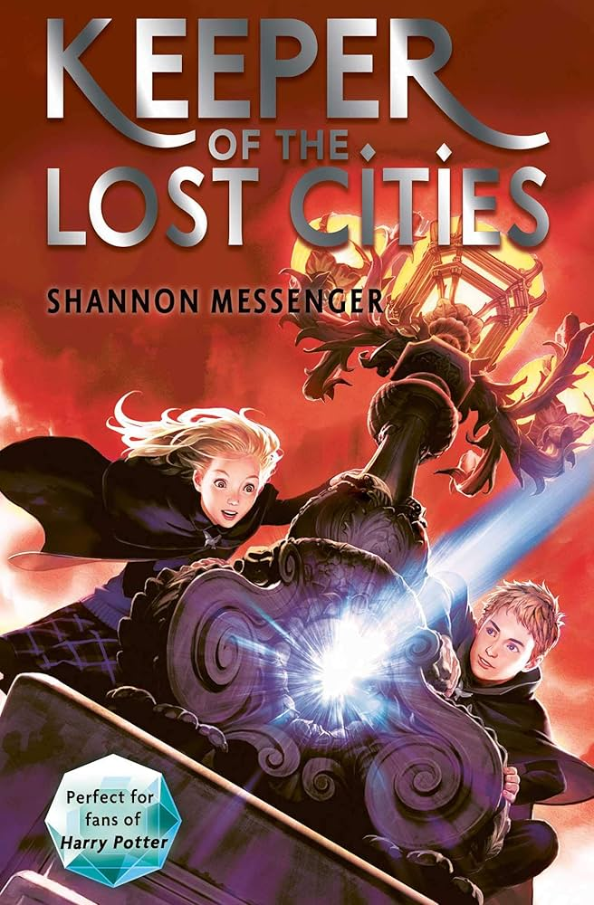
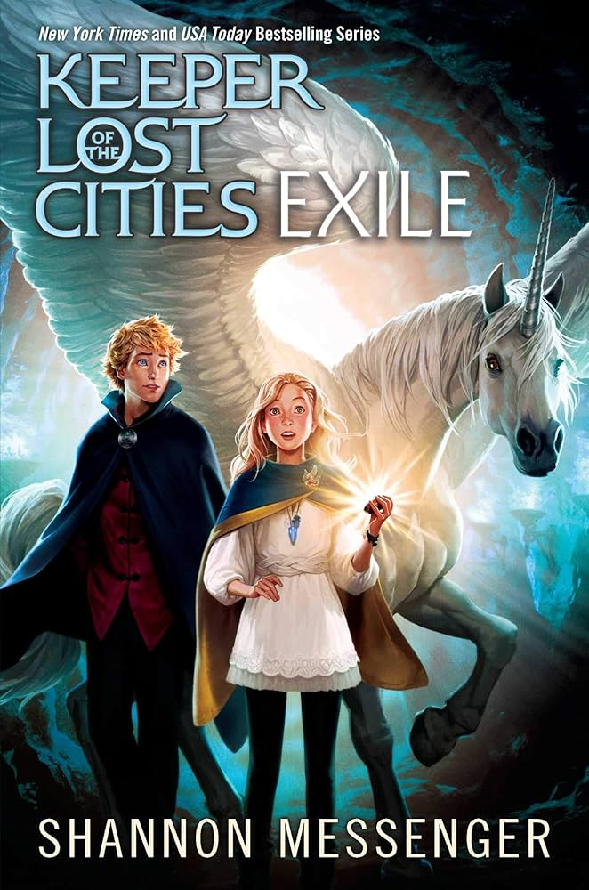
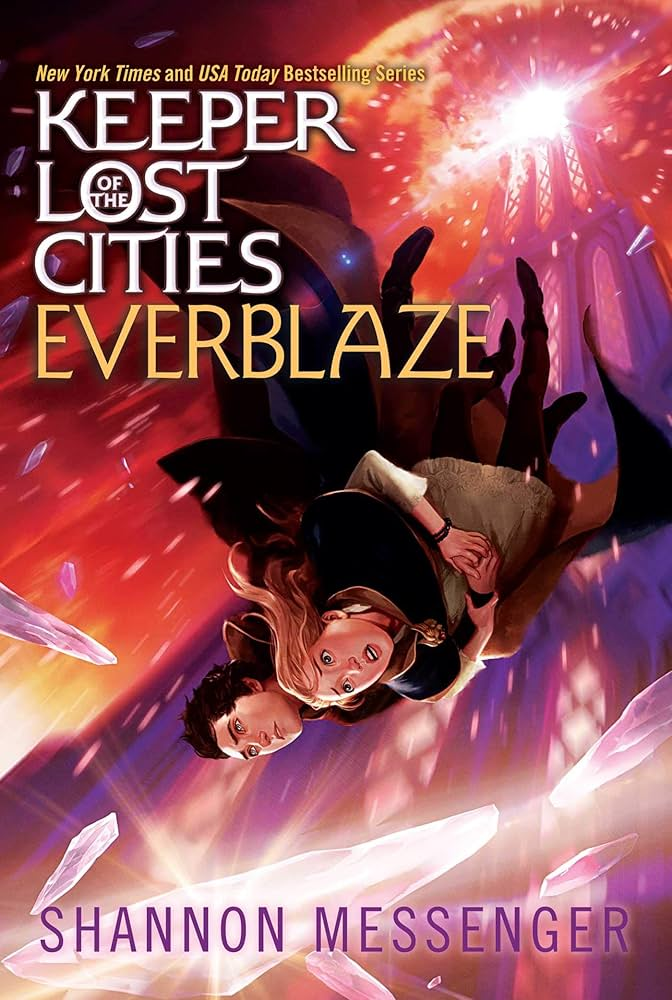
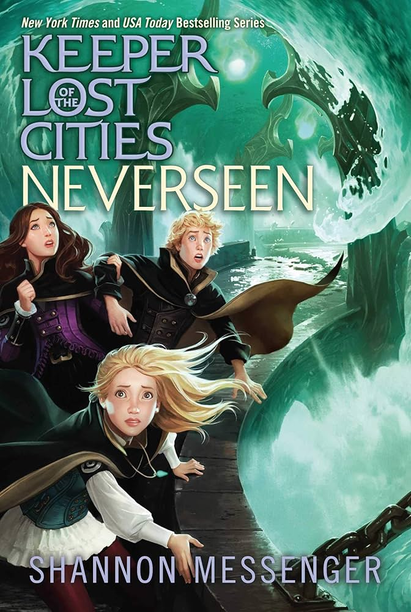
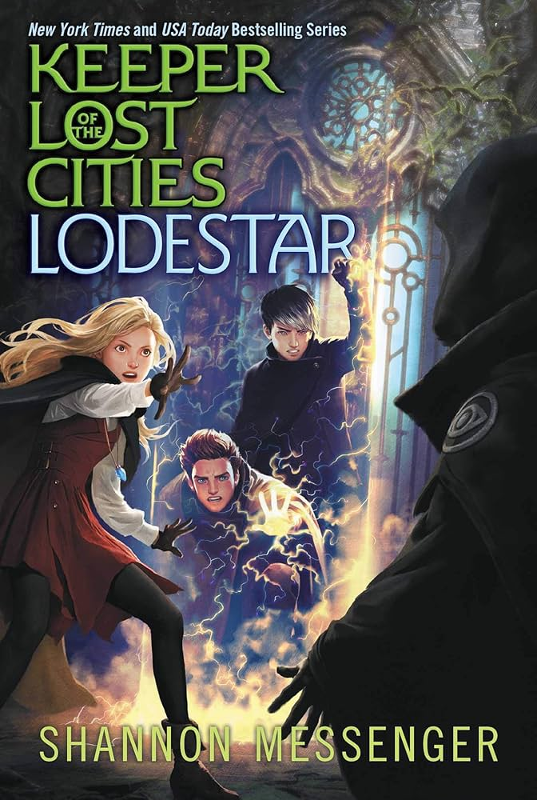
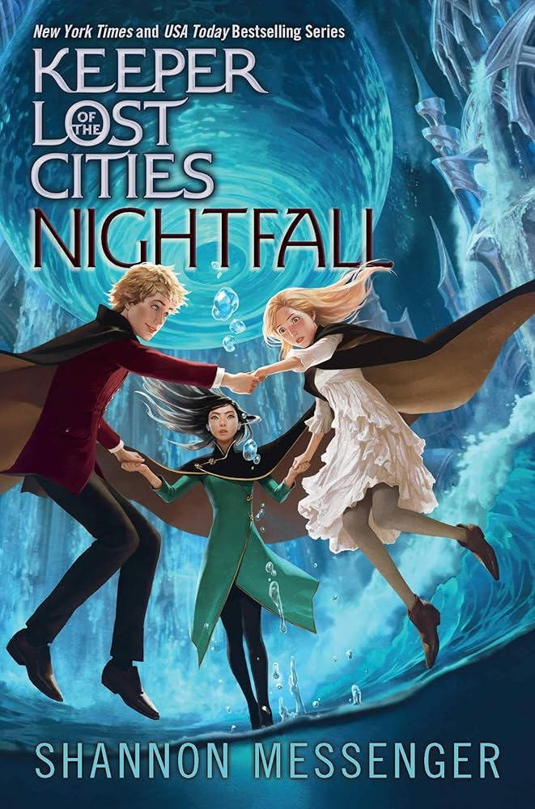
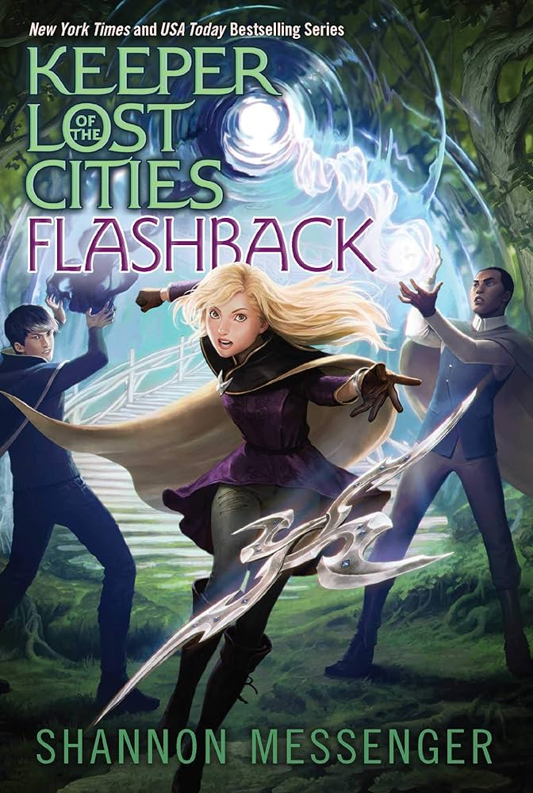
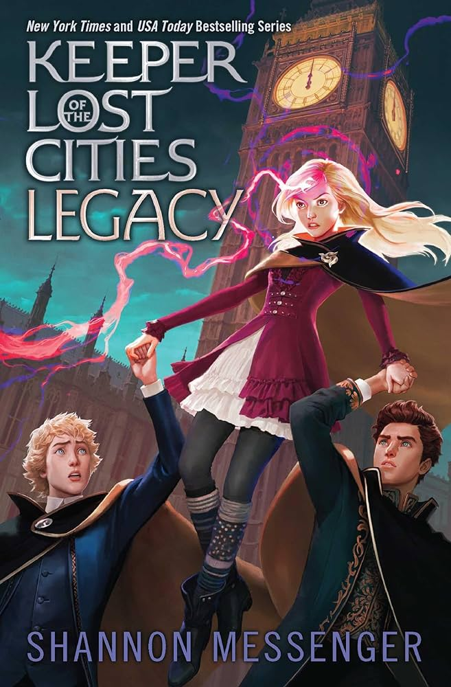

"You can’t change who you are. But you can change what you do." - Fitz Vacker
Gardiens des Cités Perdues (Keeper of the Lost Cities) est une saga de fantasy écrite par Shannon Messenger, qui plonge ses lecteurs dans un monde magique peuplé d'elfes, de créatures fantastiques et de mystères anciens. L'histoire suit Sophie Foster, une jeune fille dotée de pouvoirs exceptionnels, qui découvre qu'elle appartient à un monde caché où des cités perdues, des secrets et des conspirations bouleversent l’équilibre fragile entre les différentes races. À travers des aventures palpitantes, Sophie et ses amis devront naviguer entre trahisons, alliances et dangers pour sauver leur monde tout en apprenant à maîtriser leurs pouvoirs. L'univers de Gardiens des Cités Perdues est riche en magie, en intrigues politiques et en explorations de thèmes profonds comme l'identité, le sacrifice et le courage.
Découvrez la saga :

Gardiens des Cités Perdues
Tome 1

Exil
Tome 2

Le Grand Brasier
Tome 3

Les Invisibles
Tome 4

Projet Polaris
Tome 5

Nocturna
Tome 6

Réminisciences
Tome 7

Héritages
Tome 8
Un aperçu de chaque tome :
-
Tome 1 :
Sophie Foster, 12 ans, n’est pas une adolescente comme les autres. Elle entend les pensées des gens et se sent à l’écart, même au sein de sa propre famille. Mais un jour, elle découvre qu’elle appartient à un monde caché et qu’elle n’a jamais vraiment été à sa place parmi les humains. Dans les Cités Perdues, elle apprend qu’elle possède des capacités rares et doit jongler entre son nouvel apprentissage et des secrets anciens. Mais lorsqu’un danger menace, Sophie devra choisir de rester dans l’ombre ou d’affronter la vérité. -
Tome 2 : Exil
Sophie Foster n’est plus seule. Dans les Cités Perdues, elle a enfin trouvé des gens comme elle, avec des capacités extraordinaires. Mais les mystères autour de son passé continuent de la hanter, et un danger encore plus grand semble planer sur elle et ses proches. Tandis qu’un secret sur son pouvoir émerge, Sophie doit se confronter à des choix impossibles, et son voyage pourrait l’emmener dans des lieux où elle n’aurait jamais pensé aller. -
Tome 3 : Le Grand Brasier
Sophie Foster pensait que la vérité sur son passé lui apporterait des réponses, mais elle ne fait que soulever de nouvelles questions. Alors que ses pouvoirs grandissent et deviennent plus instables, elle découvre qu’elle pourrait être la clé pour arrêter une guerre imminente. Entourée d’amis prêts à tout pour l’aider, Sophie doit affronter un ennemi invisible et des secrets qui pourraient changer son destin à jamais. -
Tome 4 : Les Invisibles
Sophie Foster et ses amis sont en fuite. Après avoir découvert l’existence des Invisibles, un groupe rebelle prêt à tout pour semer le chaos, elle sait que le temps presse. Tandis que des alliances se forment et se brisent, Sophie doit trouver un moyen d’empêcher une guerre qui pourrait détruire tout ce qu’elle aime. Mais le véritable ennemi pourrait être plus proche qu’elle ne le pense. -
Tome 5 : Projet Polaris
Sophie Foster a toujours su qu’elle était spéciale, mais elle n’aurait jamais imaginé que son pouvoir pourrait devenir une arme. Tandis qu’elle et ses amis tentent de contrecarrer les plans des Invisibles, Sophie doit affronter ses propres limites et faire face à un dilemme moral : jusqu’où est-elle prête à aller pour sauver son monde ? Le Projet Polaris pourrait être leur unique espoir, mais à quel prix ? -
Tome 6 : Noctrurna :
Tandis que les ténèbres s’épaississent autour des Cités Perdues, Sophie Foster se bat pour garder espoir. Avec des ennemis qui se multiplient et des secrets qui refont surface, elle se retrouve à jongler entre son rôle de protectrice et son propre besoin de réponses. Lorsque tout semble perdu, Sophie découvre que parfois, les ténèbres peuvent cacher la lumière. -
Tome 7 : Réminisciences
Alors que des alliances improbables se forment, Sophie Foster est confrontée à des souvenirs qu’elle aurait préféré oublier. Avec le sort des Cités Perdues en jeu, elle doit puiser dans ses forces pour affronter des vérités difficiles. Mais certaines batailles ne peuvent être gagnées qu’en acceptant de perdre quelque chose de précieux. -
Tome 8 : Héritages
Sophie Foster fait face à une vérité déchirante : parfois, pour avancer, il faut laisser le passé derrière soi. Tandis que les tensions atteignent leur paroxysme dans les Cités Perdues, elle doit naviguer entre loyauté et trahison pour protéger ceux qu’elle aime. Mais chaque choix a des conséquences, et certains héritages ne peuvent être ignorés.